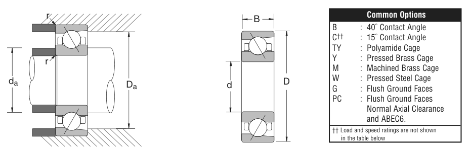

Original catalogue drawing - NSK catalogue, page 37

Scanned from the manufacturer catalogue page listing this part number. All part numbers printed on that table share the same drawing.
Scale cross-section
Blue = inner / outer ring, yellow = rolling element. Drawn to scale from this part's own
dimensions for selection reference only - not a manufacturing or assembly drawing.
Dimension table (mm / inch)
Symbol
Dimension
mm
inch
d
Bore diameter
100
3.937
D
Outside diameter
180
7.0866
B
Inner-ring / bearing width
34
1.3386
r
Chamfer (min)
2.007
0.079
Notes
Weights are given in kg. Load ratings are shown in both the original catalogue units and the converted value (1 N = 0.2248 lbf). Data is provided for selection reference only - confirm against the latest official catalogue before ordering.
Main dimensions
Bore d (mm)
100
Bore d (in)
3.9370
Outside dia. D (mm)
180
Outside dia. D (in)
7.0866
Width B (mm)
34
Width B (in)
1.3386
Load ratings & speeds
Basic dynamic load rating Cr (lbs)
28000
Basic static load rating Cor (lbs)
24000
Limiting speed - grease (rpm)
2,800
Limiting speed - oil (rpm)
3,800
Weight
Weight (kg)
3.697
Mounting dimensions (fillets / shoulders)
Chamfer r (in)
0.079
Shaft shoulder da min (in)
4.409
Housing shoulder Da max (in)
6.614
Bearing life (ISO 281 basic rating life)
C / P
Equivalent load P (N)
L10 (106 rev)
L10h at 900 rpm
4
31,138
64
1,185
6
20,758
216
4,000
8
15,569
512
9,481
10
12,455
1,000
18,519
15
8,303
3,375
62,500
Basic rating life per ISO 281: L10 = (C/P)3 with C = 124,550 N. Hours = L10 x 106 / (60n). Life-modification factors for lubrication, contamination and temperature (aISO) are not included.
Source & traceability
Brand
NSK
Source catalogue
NSK inch product catalogue
Catalogue page
p.39 (dimensions) / p.40 (ratings)
Dimensions in inches and millimetres, load ratings in lbs.
Send us the quantity you need and we will come back with price and
lead time, normally within 24 hours. Equivalent parts from other brands can be quoted at the same time.